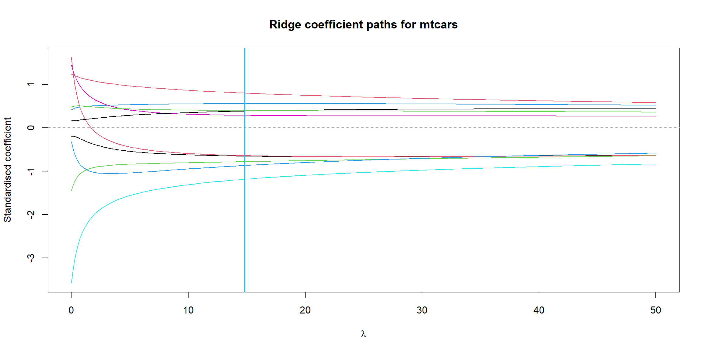

In the Modelling section we fitted linear models and worried about which variables to keep. This page picks up exactly where that left off, but from a machine-learning angle: instead of adding or removing whole variables by hand, we let the data automatically shrink the coefficients of unhelpful variables. This is called regularisation, and we use cross-validation to decide how much shrinking to do.
We will work entirely with the built-in mtcars dataset, predicting fuel economy mpg from the other 10 predictors. Many of these predictors (weight, displacement, number of cylinders, horsepower…) measure closely related aspects of “how big and powerful is the engine”, so they are heavily correlated. That correlation is precisely what makes ordinary least squares struggle and regularisation shine.
We show every idea twice: once in R (which you can run) and once in Python (shown for comparison, not executed here). The two snippets always solve the same task.
The problem: overfitting and the bias–variance trade-off
Recall the principle of parsimony from the Linear modelling section: given two models that behave similarly, prefer the simpler one. There is a deep statistical reason for this. With 10 predictors and only 32 rows, ordinary least squares (OLS) has so much freedom that it starts fitting the random noise in our particular sample rather than the true underlying signal. The model looks fantastic on the data it was trained on, then performs poorly on new cars it has never seen. That gap is overfitting.
The formal way to think about this is the bias–variance trade-off. The expected prediction error of a model can be decomposed as
A model that is too simple has high bias (it systematically misses the pattern). A model that is too flexible has high variance (it lurches around as the training data changes). Regularisation deliberately adds a little bias in exchange for a large reduction in variance, which lowers the total error.
NoteIn a nutshell: what overfitting really means
Imagine revising for an exam by memorising the answers to last year’s paper word-for-word. You will score 100% on last year’s paper, but you have learnt nothing transferable, so you do badly on this year’s. Overfitting is the model equivalent: it memorises the quirks of the training data instead of learning the general rule. We want a model that generalises to new cars, not one that recites the 32 cars it has already seen. Adding more predictors than the data can support is one of the easiest ways to overfit.
Let us first fit a plain OLS model so we have a baseline. This connects directly to the GLM and AIC-based model selection you saw in Modelling: AIC penalises complexity to avoid exactly this trap, and regularisation is a smooth, automatic version of the same idea.
Code
```{r}#| label: ols-baselineset.seed(2026)# Plain ordinary least squares with all 10 predictorsolsModel <-lm(mpg ~ ., data = mtcars)summary(olsModel)$coefficients# Coefficient of determination on the TRAINING data (optimistic!)summary(olsModel)$r.squared```
Notice how high the training \(R^2\) is, yet several coefficients have large standard errors and non-significant \(p\)-values. That instability is the symptom of correlated predictors and too little data — a textbook case for regularisation.
Code
```{python}#| eval: falseimport statsmodels.api as smimport statsmodels.formula.api as smf# mtcars ships with statsmodels' R datasets; or load your own X, y.mtcars = sm.datasets.get_rdataset("mtcars").dataolsModel = smf.ols("mpg ~ cyl + disp + hp + drat + wt + qsec + vs + am + gear + carb", data=mtcars).fit()print(olsModel.params)print(olsModel.rsquared) # optimistic training R^2```
Ridge regression (the L2 penalty)
Ridge regression keeps all the predictors but discourages large coefficients. Instead of minimising just the residual sum of squares, it minimises
where the second term is the L2 penalty (the squared length of the coefficient vector). The tuning parameter \(\lambda \ge 0\) controls the strength of shrinkage: at \(\lambda = 0\) we recover OLS, and as \(\lambda \to \infty\) all coefficients are pulled toward zero. Ridge never sets a coefficient exactly to zero, but it tames the wild, correlated coefficients that cause high variance.
Ridge is available in the MASS package, which ships with R (it is a “recommended” package), so the chunk below runs.
Code
```{r}#| label: ridge-massridgelibrary(MASS)```
Warning: package 'MASS' was built under R version 4.4.3
Code
```{r}#| label: ridge-massridgeset.seed(2026)# Try a grid of lambda valueslambdaGrid <-seq(0, 50, length.out =200)ridgeFit <-lm.ridge(mpg ~ ., data = mtcars, lambda = lambdaGrid)# The generalised cross-validation (GCV) criterion suggests a good lambdabestLambda <- lambdaGrid[which.min(ridgeFit$GCV)]bestLambda# Coefficients at the chosen lambda (note they are shrunk toward zero)coef(lm.ridge(mpg ~ ., data = mtcars, lambda = bestLambda))```
[1] 14.82412
cyl disp hp drat wt
21.139824078 -0.372836295 -0.005268045 -0.011605202 1.053366369 -1.232246130
qsec vs am gear carb
0.161806048 0.770115556 1.622054175 0.544416420 -0.547553289
Code
```{r}#| label: ridge-pathplot# Visualise how each coefficient shrinks as lambda growsmatplot(lambdaGrid, t(ridgeFit$coef), type ="l", lty =1,xlab =expression(lambda), ylab ="Standardised coefficient",main ="Ridge coefficient paths for mtcars")abline(h =0, col ="grey60", lty =2)abline(v = bestLambda, col ="#31BAE9", lwd =2)```

The matching Python code uses scikit-learn’s Ridge. Scikit-learn calls the penalty strength alpha rather than lambda, and it is good practice to standardise the predictors first (ridge is not scale-invariant).
Code
```{python}#| eval: falseimport numpy as npimport statsmodels.api as smfrom sklearn.linear_model import Ridgefrom sklearn.preprocessing import StandardScalermtcars = sm.datasets.get_rdataset("mtcars").dataX = mtcars.drop(columns="mpg").valuesy = mtcars["mpg"].valuesXstd = StandardScaler().fit_transform(X)ridge = Ridge(alpha=10.0) # alpha is sklearn's name for lambdaridge.fit(Xstd, y)print(ridge.coef_) # shrunk coefficients```
Lasso (the L1 penalty)
The lasso (least absolute shrinkage and selection operator) swaps the squared penalty for the L1 penalty — the sum of the absolute values of the coefficients:
This small change has a big consequence: as \(\lambda\) grows, the lasso pushes some coefficients exactly to zero, effectively dropping those predictors from the model. So the lasso does shrinkage and automatic variable selection at the same time — a data-driven version of the parsimony principle. For correlated predictors like disp, wt and hp, the lasso will often keep one and discard the others.
The most popular lasso implementation in R is glmnet. It is not a recommended package (you would install it with install.packages("glmnet")), so we mark the chunk as not evaluated, but this is exactly what you would run.
Code
```{r}#| eval: false#| label: lasso-glmnetlibrary(glmnet)set.seed(2026)# glmnet wants a numeric predictor matrix x and response vector yx <-model.matrix(mpg ~ ., data = mtcars)[, -1] # drop the intercept columny <- mtcars$mpg# alpha = 1 selects the LASSO (alpha = 0 would be ridge)lassoFit <-glmnet(x, y, alpha =1)# Coefficients at a particular lambda; some are forced to exactly zerocoef(lassoFit, s =1.0)# Plot the coefficient paths against the L1 normplot(lassoFit, xvar ="lambda", label =TRUE)```
The Python equivalent is scikit-learn’s Lasso. Again alpha plays the role of \(\lambda\), and standardising first is recommended.
Code
```{python}#| eval: falseimport statsmodels.api as smfrom sklearn.linear_model import Lassofrom sklearn.preprocessing import StandardScalermtcars = sm.datasets.get_rdataset("mtcars").dataX = mtcars.drop(columns="mpg").valuesy = mtcars["mpg"].valuesXstd = StandardScaler().fit_transform(X)lasso = Lasso(alpha=0.5)lasso.fit(Xstd, y)print(lasso.coef_) # several entries will be exactly 0.0```
Cross-validation: choosing the penalty strength
We have been waving our hands at “pick a good \(\lambda\)”. How do we actually do it? We cannot use the training error, because that always prefers \(\lambda = 0\) (OLS), which overfits. We need to estimate how the model performs on unseen data, and the standard tool for that is k-fold cross-validation (CV).
The recipe is:
Split the data into \(k\) roughly equal parts (“folds”), say \(k = 10\).
Hold out fold 1, train the model on the other \(k-1\) folds, and measure the prediction error on the held-out fold 1.
Repeat, holding out fold 2, then fold 3, and so on, until every fold has been the test set exactly once.
Average the \(k\) test errors. This average is an honest estimate of out-of-sample error.
We run this whole procedure for each candidate \(\lambda\) and pick the \(\lambda\) with the lowest cross-validated error (a common refinement is the “one-standard-error rule”, which picks the simplest model within one standard error of the best).
NoteIn a nutshell: what cross-validation buys you
Cross-validation lets you test the model on data it has not seen, without needing a separate fresh dataset. By rotating which slice is held out, every observation gets used for both training and testing — just never at the same time. The pay-off is an honest estimate of how well the model will generalise, which is exactly what we need to choose \(\lambda\) without fooling ourselves with optimistic training-set numbers.
In R, glmnet provides cv.glmnet, which runs the entire k-fold search for you. As with the lasso chunk above, glmnet is not a recommended package, so this is shown but not run.
Code
```{r}#| eval: false#| label: cv-glmnetlibrary(glmnet)set.seed(2026)x <-model.matrix(mpg ~ ., data = mtcars)[, -1]y <- mtcars$mpg# 10-fold cross-validated lassocvFit <-cv.glmnet(x, y, alpha =1, nfolds =10)# The lambda with the lowest CV error, and the parsimonious "1-SE" choicecvFit$lambda.mincvFit$lambda.1se# Plot CV error against log(lambda)plot(cvFit)# Coefficients at the cross-validated best lambdacoef(cvFit, s ="lambda.min")```
The Python equivalent is LassoCV, which bakes the cross-validation directly into the fit. Alternatively cross_val_score cross-validates any estimator you hand it.
Code
```{python}#| eval: falseimport statsmodels.api as smfrom sklearn.linear_model import LassoCVfrom sklearn.preprocessing import StandardScalermtcars = sm.datasets.get_rdataset("mtcars").dataX = mtcars.drop(columns="mpg").valuesy = mtcars["mpg"].valuesXstd = StandardScaler().fit_transform(X)# LassoCV searches a grid of alphas with 10-fold CVlassoCv = LassoCV(cv=10, random_state=2026).fit(Xstd, y)print("Best alpha:", lassoCv.alpha_)print(lassoCv.coef_)# Or cross-validate any model explicitly:# from sklearn.model_selection import cross_val_score# scores = cross_val_score(lassoCv, Xstd, y, cv=10, scoring="r2")```
Going further
We have met the two classic penalties. In practice you rarely stop there, and the tooling is richer than the individual function calls above.
TipGoing further 🚀
Elastic net blends the L1 and L2 penalties, minimising \[
\sum_i (y_i - x_i^\top\beta)^2 + \lambda\Big[\alpha\textstyle\sum_j |\beta_j| + (1-\alpha)\textstyle\sum_j \beta_j^2\Big].
\] It enjoys the variable selection of the lasso while handling groups of correlated predictors more gracefully (the lasso tends to pick one and drop the rest arbitrarily). In glmnet you simply set alpha between 0 and 1; in scikit-learn you use ElasticNet.
Once you have several models and tuning parameters to juggle, you will want a unified workflow that handles preprocessing, resampling and tuning consistently:
R:tidymodels (the modern, tidyverse-friendly framework) or the older caret package wrap fitting, cross-validation and grid search behind one tidy interface.
Python: combine a Pipeline (so scaling is refitted inside every CV fold, avoiding data leakage) with GridSearchCV to search over alpha and the L1/L2 mix automatically.
These tools turn the manual steps on this page into a few clean, reproducible lines.
Source Code
---title: "Regularisation and Cross-Validation"format: html: fig-width: 12 fig-height: 6 code-fold: show code-tools: true code-block-bg: true code-block-border-left: "#31BAE9" toc: true code-copy: true number_sections: true echo: fenced mathjax: trueengine: knitr---In the Modelling section we fitted linear models and worried about which variables to keep. This page picks up exactly where that left off, but from a machine-learning angle: instead of adding or removing whole variables by hand, we let the data *automatically* shrink the coefficients of unhelpful variables. This is called **regularisation**, and we use **cross-validation** to decide how much shrinking to do.We will work entirely with the built-in `mtcars` dataset, predicting fuel economy `mpg` from the other 10 predictors. Many of these predictors (weight, displacement, number of cylinders, horsepower...) measure closely related aspects of "how big and powerful is the engine", so they are heavily correlated. That correlation is precisely what makes ordinary least squares struggle and regularisation shine.We show every idea twice: once in **R** (which you can run) and once in **Python** (shown for comparison, not executed here). The two snippets always solve the same task.# The problem: overfitting and the bias–variance trade-offRecall the *principle of parsimony* from the Linear modelling section: given two models that behave similarly, prefer the simpler one. There is a deep statistical reason for this. With 10 predictors and only 32 rows, ordinary least squares (OLS) has so much freedom that it starts fitting the random **noise** in our particular sample rather than the true underlying signal. The model looks fantastic on the data it was trained on, then performs poorly on new cars it has never seen. That gap is **overfitting**.The formal way to think about this is the **bias–variance trade-off**. The expected prediction error of a model can be decomposed as$$\mathbb{E}\big[(y - \hat{f}(x))^2\big] = \underbrace{\big(\text{Bias}[\hat{f}(x)]\big)^2}_{\text{too simple}} + \underbrace{\text{Var}[\hat{f}(x)]}_{\text{too flexible}} + \underbrace{\sigma^2}_{\text{irreducible noise}}.$$A model that is too simple has high **bias** (it systematically misses the pattern). A model that is too flexible has high **variance** (it lurches around as the training data changes). Regularisation deliberately adds a little bias in exchange for a large reduction in variance, which lowers the *total* error.::: {.callout-note title="In a nutshell: what overfitting really means"}Imagine revising for an exam by **memorising the answers to last year's paper** word-for-word. You will score 100% on last year's paper, but you have learnt nothing transferable, so you do badly on this year's. Overfitting is the model equivalent: it memorises the quirks of the training data instead of learning the general rule. We want a model that *generalises* to new cars, not one that recites the 32 cars it has already seen. Adding more predictors than the data can support is one of the easiest ways to overfit.:::Let us first fit a plain OLS model so we have a baseline. This connects directly to the GLM and AIC-based model selection you saw in Modelling: AIC penalises complexity to avoid exactly this trap, and regularisation is a smooth, automatic version of the same idea.```{r}#| label: ols-baselineset.seed(2026)# Plain ordinary least squares with all 10 predictorsolsModel <-lm(mpg ~ ., data = mtcars)summary(olsModel)$coefficients# Coefficient of determination on the TRAINING data (optimistic!)summary(olsModel)$r.squared```Notice how high the training $R^2$ is, yet several coefficients have large standard errors and non-significant $p$-values. That instability is the symptom of correlated predictors and too little data — a textbook case for regularisation.```{python}#| eval: falseimport statsmodels.api as smimport statsmodels.formula.api as smf# mtcars ships with statsmodels' R datasets; or load your own X, y.mtcars = sm.datasets.get_rdataset("mtcars").dataolsModel = smf.ols("mpg ~ cyl + disp + hp + drat + wt + qsec + vs + am + gear + carb", data=mtcars).fit()print(olsModel.params)print(olsModel.rsquared) # optimistic training R^2```# Ridge regression (the L2 penalty)**Ridge regression** keeps all the predictors but discourages large coefficients. Instead of minimising just the residual sum of squares, it minimises$$\sum_{i=1}^{n}\big(y_i - x_i^\top \beta\big)^2 \;+\; \lambda \sum_{j=1}^{p} \beta_j^2,$$where the second term is the **L2 penalty** (the squared length of the coefficient vector). The tuning parameter $\lambda \ge 0$ controls the strength of shrinkage: at $\lambda = 0$ we recover OLS, and as $\lambda \to \infty$ all coefficients are pulled toward zero. Ridge never sets a coefficient *exactly* to zero, but it tames the wild, correlated coefficients that cause high variance.Ridge is available in the **MASS** package, which ships with R (it is a "recommended" package), so the chunk below runs.```{r}#| label: ridge-massridgelibrary(MASS)set.seed(2026)# Try a grid of lambda valueslambdaGrid <-seq(0, 50, length.out =200)ridgeFit <-lm.ridge(mpg ~ ., data = mtcars, lambda = lambdaGrid)# The generalised cross-validation (GCV) criterion suggests a good lambdabestLambda <- lambdaGrid[which.min(ridgeFit$GCV)]bestLambda# Coefficients at the chosen lambda (note they are shrunk toward zero)coef(lm.ridge(mpg ~ ., data = mtcars, lambda = bestLambda))``````{r}#| label: ridge-pathplot# Visualise how each coefficient shrinks as lambda growsmatplot(lambdaGrid, t(ridgeFit$coef), type ="l", lty =1,xlab =expression(lambda), ylab ="Standardised coefficient",main ="Ridge coefficient paths for mtcars")abline(h =0, col ="grey60", lty =2)abline(v = bestLambda, col ="#31BAE9", lwd =2)```The matching Python code uses `scikit-learn`'s `Ridge`. Scikit-learn calls the penalty strength `alpha` rather than `lambda`, and it is good practice to standardise the predictors first (ridge is not scale-invariant).```{python}#| eval: falseimport numpy as npimport statsmodels.api as smfrom sklearn.linear_model import Ridgefrom sklearn.preprocessing import StandardScalermtcars = sm.datasets.get_rdataset("mtcars").dataX = mtcars.drop(columns="mpg").valuesy = mtcars["mpg"].valuesXstd = StandardScaler().fit_transform(X)ridge = Ridge(alpha=10.0) # alpha is sklearn's name for lambdaridge.fit(Xstd, y)print(ridge.coef_) # shrunk coefficients```# Lasso (the L1 penalty)The **lasso** (least absolute shrinkage and selection operator) swaps the squared penalty for the **L1 penalty** — the sum of the *absolute* values of the coefficients:$$\sum_{i=1}^{n}\big(y_i - x_i^\top \beta\big)^2 \;+\; \lambda \sum_{j=1}^{p} |\beta_j|.$$This small change has a big consequence: as $\lambda$ grows, the lasso pushes some coefficients **exactly to zero**, effectively dropping those predictors from the model. So the lasso does shrinkage *and* automatic variable selection at the same time — a data-driven version of the parsimony principle. For correlated predictors like `disp`, `wt` and `hp`, the lasso will often keep one and discard the others.The most popular lasso implementation in R is **glmnet**. It is not a recommended package (you would install it with `install.packages("glmnet")`), so we mark the chunk as not evaluated, but this is exactly what you would run.```{r}#| eval: false#| label: lasso-glmnetlibrary(glmnet)set.seed(2026)# glmnet wants a numeric predictor matrix x and response vector yx <-model.matrix(mpg ~ ., data = mtcars)[, -1] # drop the intercept columny <- mtcars$mpg# alpha = 1 selects the LASSO (alpha = 0 would be ridge)lassoFit <-glmnet(x, y, alpha =1)# Coefficients at a particular lambda; some are forced to exactly zerocoef(lassoFit, s =1.0)# Plot the coefficient paths against the L1 normplot(lassoFit, xvar ="lambda", label =TRUE)```The Python equivalent is `scikit-learn`'s `Lasso`. Again `alpha` plays the role of $\lambda$, and standardising first is recommended.```{python}#| eval: falseimport statsmodels.api as smfrom sklearn.linear_model import Lassofrom sklearn.preprocessing import StandardScalermtcars = sm.datasets.get_rdataset("mtcars").dataX = mtcars.drop(columns="mpg").valuesy = mtcars["mpg"].valuesXstd = StandardScaler().fit_transform(X)lasso = Lasso(alpha=0.5)lasso.fit(Xstd, y)print(lasso.coef_) # several entries will be exactly 0.0```# Cross-validation: choosing the penalty strengthWe have been waving our hands at "pick a good $\lambda$". How do we actually do it? We cannot use the training error, because that always prefers $\lambda = 0$ (OLS), which overfits. We need to estimate how the model performs on **unseen** data, and the standard tool for that is **k-fold cross-validation (CV)**.The recipe is:1. Split the data into $k$ roughly equal parts ("folds"), say $k = 10$.2. Hold out fold 1, train the model on the other $k-1$ folds, and measure the prediction error on the held-out fold 1.3. Repeat, holding out fold 2, then fold 3, and so on, until every fold has been the test set exactly once.4. Average the $k$ test errors. This average is an honest estimate of out-of-sample error.We run this whole procedure for each candidate $\lambda$ and pick the $\lambda$ with the lowest cross-validated error (a common refinement is the "one-standard-error rule", which picks the simplest model within one standard error of the best).::: {.callout-note title="In a nutshell: what cross-validation buys you"}Cross-validation lets you **test the model on data it has not seen, without needing a separate fresh dataset**. By rotating which slice is held out, every observation gets used for both training and testing — just never at the same time. The pay-off is an honest estimate of how well the model will generalise, which is exactly what we need to choose $\lambda$ without fooling ourselves with optimistic training-set numbers.:::In R, `glmnet` provides `cv.glmnet`, which runs the entire k-fold search for you. As with the lasso chunk above, glmnet is not a recommended package, so this is shown but not run.```{r}#| eval: false#| label: cv-glmnetlibrary(glmnet)set.seed(2026)x <-model.matrix(mpg ~ ., data = mtcars)[, -1]y <- mtcars$mpg# 10-fold cross-validated lassocvFit <-cv.glmnet(x, y, alpha =1, nfolds =10)# The lambda with the lowest CV error, and the parsimonious "1-SE" choicecvFit$lambda.mincvFit$lambda.1se# Plot CV error against log(lambda)plot(cvFit)# Coefficients at the cross-validated best lambdacoef(cvFit, s ="lambda.min")```The Python equivalent is `LassoCV`, which bakes the cross-validation directly into the fit. Alternatively `cross_val_score` cross-validates any estimator you hand it.```{python}#| eval: falseimport statsmodels.api as smfrom sklearn.linear_model import LassoCVfrom sklearn.preprocessing import StandardScalermtcars = sm.datasets.get_rdataset("mtcars").dataX = mtcars.drop(columns="mpg").valuesy = mtcars["mpg"].valuesXstd = StandardScaler().fit_transform(X)# LassoCV searches a grid of alphas with 10-fold CVlassoCv = LassoCV(cv=10, random_state=2026).fit(Xstd, y)print("Best alpha:", lassoCv.alpha_)print(lassoCv.coef_)# Or cross-validate any model explicitly:# from sklearn.model_selection import cross_val_score# scores = cross_val_score(lassoCv, Xstd, y, cv=10, scoring="r2")```# Going furtherWe have met the two classic penalties. In practice you rarely stop there, and the tooling is richer than the individual function calls above.::: {.callout-tip title="Going further 🚀"}**Elastic net** blends the L1 and L2 penalties, minimising$$\sum_i (y_i - x_i^\top\beta)^2 + \lambda\Big[\alpha\textstyle\sum_j |\beta_j| + (1-\alpha)\textstyle\sum_j \beta_j^2\Big].$$It enjoys the variable selection of the lasso while handling groups of correlated predictors more gracefully (the lasso tends to pick one and drop the rest arbitrarily). In `glmnet` you simply set `alpha` between 0 and 1; in scikit-learn you use `ElasticNet`.Once you have several models and tuning parameters to juggle, you will want a **unified workflow** that handles preprocessing, resampling and tuning consistently:- **R:** [`tidymodels`](https://www.tidymodels.org/) (the modern, tidyverse-friendly framework) or the older [`caret`](https://topepo.github.io/caret/) package wrap fitting, cross-validation and grid search behind one tidy interface.- **Python:** combine a [`Pipeline`](https://scikit-learn.org/stable/modules/compose.html) (so scaling is refitted inside every CV fold, avoiding data leakage) with [`GridSearchCV`](https://scikit-learn.org/stable/modules/grid_search.html) to search over `alpha` and the L1/L2 mix automatically.These tools turn the manual steps on this page into a few clean, reproducible lines.:::